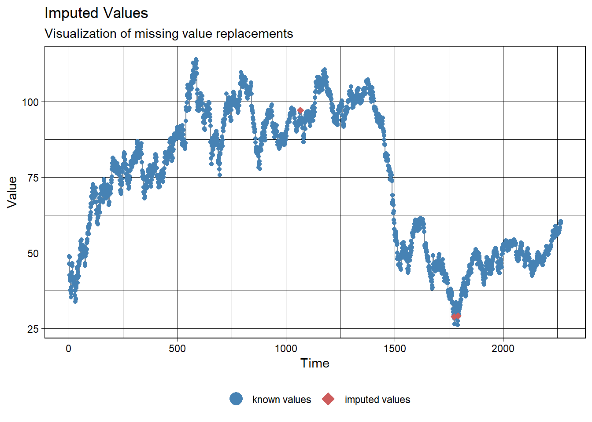
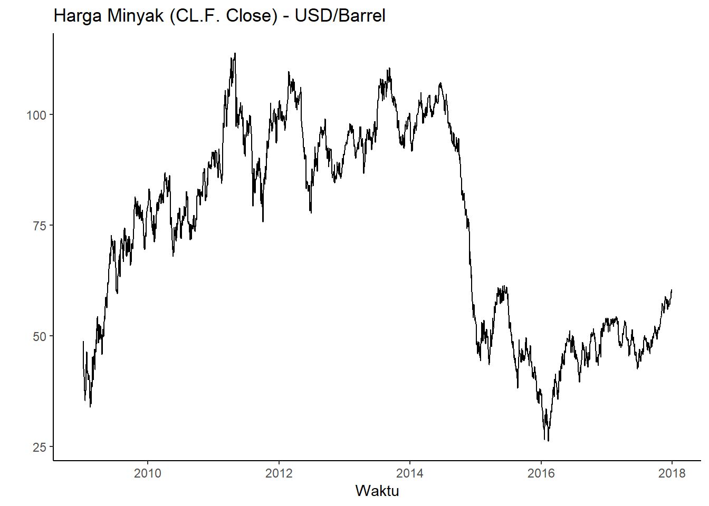
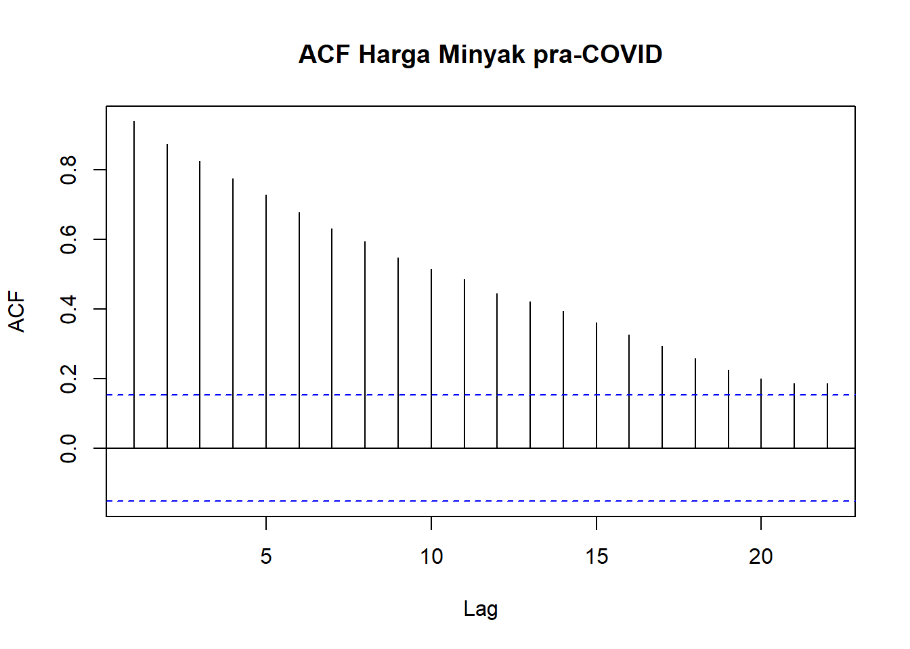
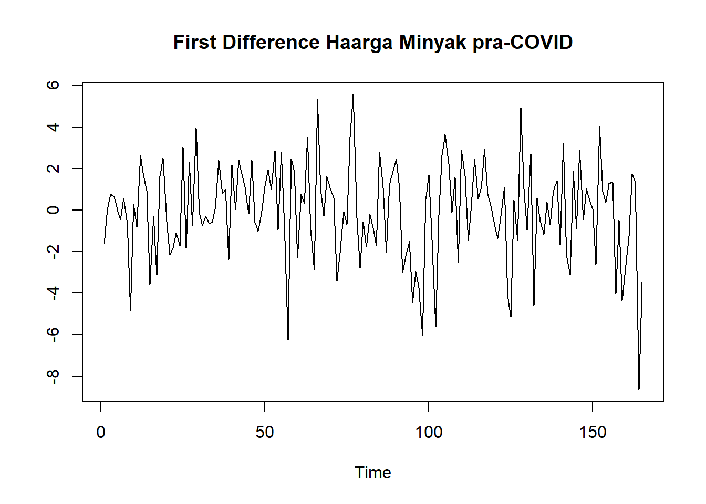
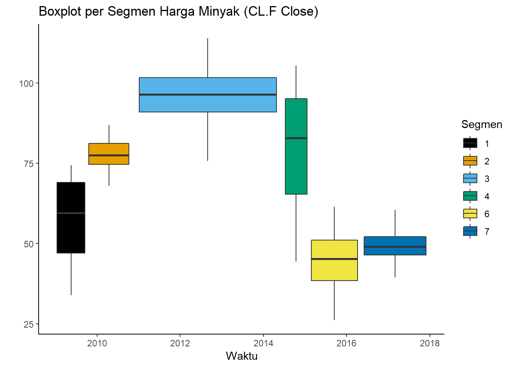
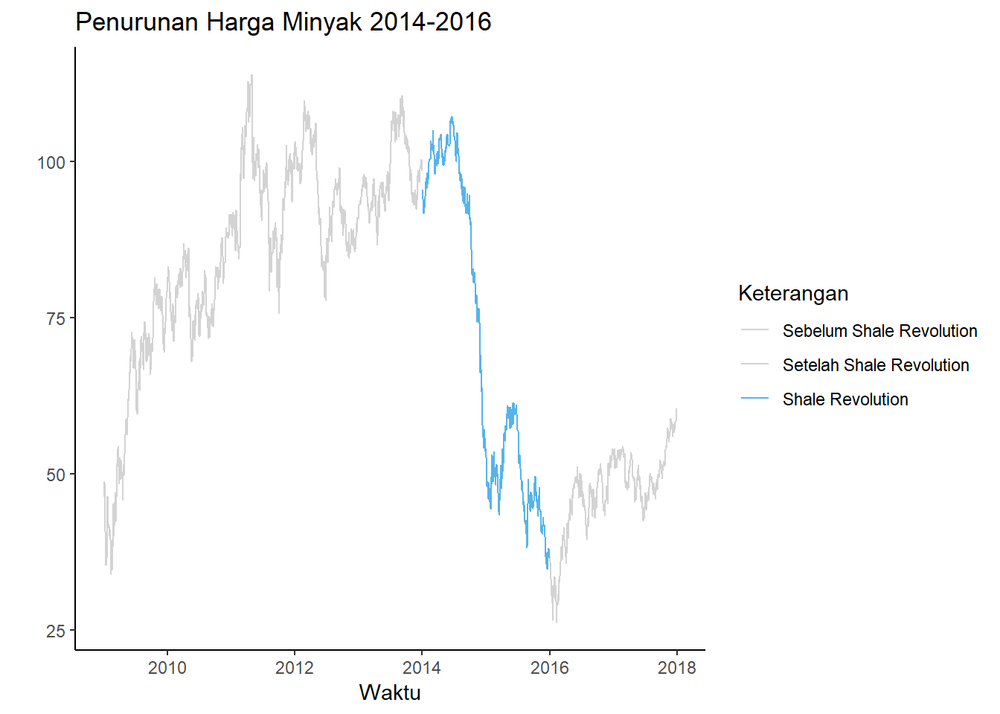
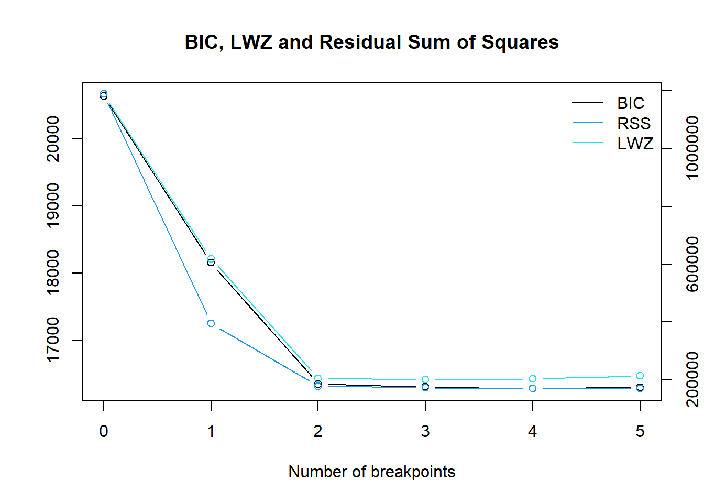
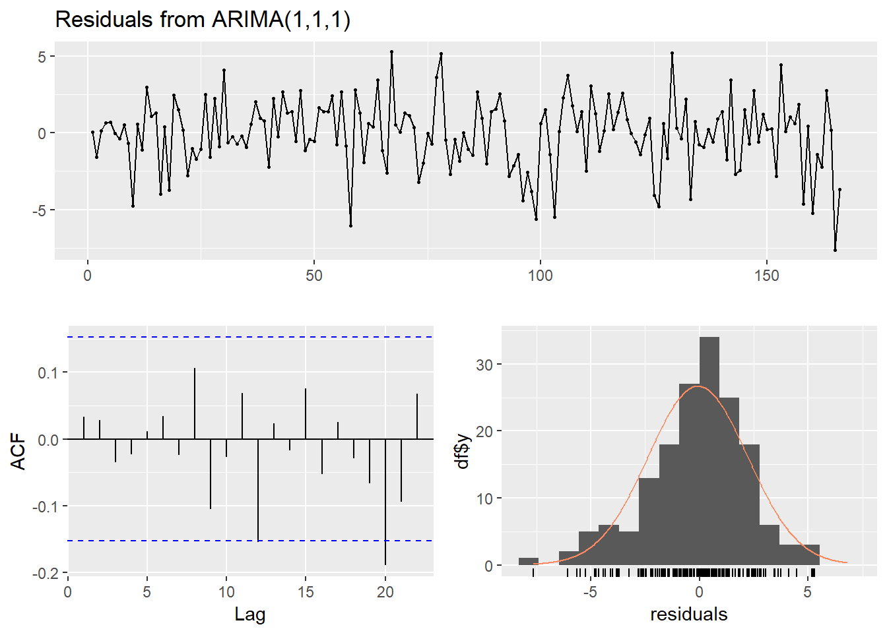
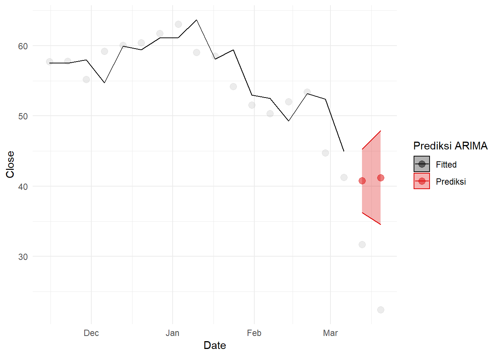
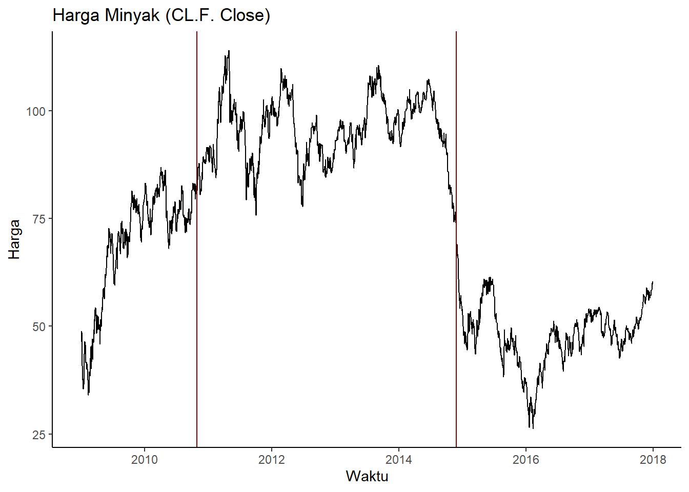

Perbandingan Smoothing, ARIMA, dan ARIMAX untuk prediksi harga minyak mentah
2022-04-06
Pendahuluan
Struktur penelitian
Laporan ini akan membandingkan beberapa metode peralaman deret waktu untuk data harga minyak mentah. Metode tersebut akan dilatih menggunakan harga minyak mentah dari tahun 2009 sampai 2016, lalu diuji dengan meramal harga minyak mentah tahun 2017. Pembagian tersebut juga dilakukan di (He 2018), yang membandingkan model deret waktu seperti pemulusan dan ARIMA dengan model pembelajaran mesin (SVM). Berbeda dengan penelitian tersebut, penelitian ini akan menambahkan jenis pemulusan yang dipakai, serta mencoba menambahkan pengaruh peubah bebas dummy yang memodelkan efek hari setelah libur, peubahan struktural pada rezim harga minyak, dan lain-lain. Sekarang, penulisan laporan masih dalam tahap praproses dan eksplorasi data.
Ekstraksi data
Dataset yang digunakan sebagai berikut:
crude<-read.csv("crude.csv",sep=";")Beberapa observasi dari dataset tersebut dapat diperlihatkan untuk memberi gambaran mengenai data. Peubah yang akan dimodelkan adalah harga close, atau harga minyak saat pasar ditutup:
knitr::kable(head(crude,n=5))| X | CL.F.Open | CL.F.High | CL.F.Low | CL.F.Close | CL.F.Volume | CL.F.Adjusted |
|---|---|---|---|---|---|---|
| 23/08/2000 | 31.95 | 32.80 | 31.95 | 32.05 | 79385 | 32.05 |
| 24/08/2000 | 31.90 | 32.24 | 31.40 | 31.63 | 72978 | 31.63 |
| 25/08/2000 | 31.70 | 32.10 | 31.32 | 32.05 | 44601 | 32.05 |
| 28/08/2000 | 32.04 | 32.92 | 31.86 | 32.87 | 46770 | 32.87 |
| 29/08/2000 | 32.82 | 33.03 | 32.56 | 32.72 | 49131 | 32.72 |
Terlihat bahwa peubah yang menandakan tanggal memiliki format hari/bulan/tahun. Ubah peubah tersebut menjadi tipe data date dengan format yang tepat, lalu lakukan pembagian:
crude$X<-as.Date(crude$X, format="%d/%m/%Y")
crudetrain<-subset(crude,
X >= as.Date('2009-01-01') &
X <= as.Date('2016-12-31'))
crudetest<-subset(crude,
X >= as.Date('2017-01-01') &
X <= as.Date('2017-12-31'))Sudah diambil data yang relevan untuk diteliti.
<!--chapter:end:index.Rmd-->
# Praproses dan Eksplorasi Data
Bagian ini akan membahas beberapa hal:
1. Permasalahan interval waktu data
2. Latar belakang fluktuasi harga minyak
3. Ekstraksi peubah *dummy* untuk memodelkan efek hari libur dan perubahan struktural
4. Pola data time series dan kestasioneran
5. Identifikasi model.
## Interval waktu data
Dari melihat 10 tanggal pertama yang dicatat di dataset harga minyak:
```r
knitr::kable(head(crudetrain[,c(1,5)],n=10),
col.names = c("Tanggal Pengamatan","Harga Close"))| Tanggal Pengamatan | Harga Close | |
|---|---|---|
| 2166 | 2009-01-02 | 46.34 |
| 2167 | 2009-01-05 | 48.81 |
| 2168 | 2009-01-06 | 48.58 |
| 2169 | 2009-01-07 | 42.63 |
| 2170 | 2009-01-08 | 41.70 |
| 2171 | 2009-01-09 | 40.83 |
| 2172 | 2009-01-12 | 37.59 |
| 2173 | 2009-01-13 | 37.78 |
| 2174 | 2009-01-14 | 37.28 |
| 2175 | 2009-01-15 | 35.40 |
Terlihat bahwa rentang waktu pengamatan data tidak sama. Misal, tidak ada pengamatan saat 1 Januari 2009 karena ada libur tahun baru. Selain itu, ada lompatan dari 2 Januari 2009 ke 5 Januari 2009. Dalam kata lain, harga minyak tidak diamati pada tanggal 3 dan 4 Januari 2009, yang merupakan akhir minggu (hari Sabtu dan Minggu). Pola yang sama terulang di data deret waktu tersebut bagi akhir minggu dan hari libur lainnya - pasar ditutup sehingga harga minyak tidak ada.
Situasi ini dapat ditangani dengan tiga cara umum:
- Abaikan rentang waktu harian yang tidak sama. Gunakan trading days atau hari kerja sebagai rentang waktu.
- Isi data akhir minggu dan hari libur menggunakan suatu bentuk interpolasi.
- Agregasikan data menjadi data mingguan, bulanan, atau tahunan.
Cara pertama sering dipakai dalam peramalan deret waktu. Walaupun tidak ada data hari libur dan akhir minggu, nilai harian reksadana saham CREF dari tahun 2004 sampai 2006 dimodelkan dengan menggangap data tersebut memiliki rentang waktu yang sama (Cryer dan Chan 2008). Pemodelan harga emas harian dari tahun 1985 sampai 1989 juga hanya menggunakan trading days. Dilakukan interpolasi, tetapi hanya untuk data hilang di trading days (Hyndman dan Athanasopoulos 2018). Peramalan harga minyak (Elshendy et al. 2018) juga menggunakan data selama 84 hari kerja saja.
Namun, juga ada justifikasi untuk interpolasi data. Interpolasi data dilakukan saat observasi tersebut dianggap memiliki nilai suatu peubah, tetapi tidak dapat diobservasi. Misal, tidak perlu melakukan interpolasi peubah gaji untuk seorang anak karena dia tidak mungkin bekerja. Dalam kasus ini, harga minyak di hari libur mungkin saja memiliki nilai. Pasar saham dan sekuritas sering mengalami after-hours trading; saat hal tersebut terjadi, harga berubah (Barclay dan Hendershott 2015). Walaupun begitu, bentuk proses tersebut harus diasumsikan untuk diinterpolasi. Misal, jika menggunakan interpolasi linear, diasumsikan bahwa pergerakan harga dari hari kerja ke hari kerja lainnya di hari libur konstan. Ini belum tentu benar - mungkin saja di hari Sabtu, harga masih naik dari hari Jumat, tetapi harga turun di hari Minggu. Interpolasi linear akan mengasumsikan harga turun di Sabtu dan Minggu. Oleh karena itu, interpolasi akan menghasilkan aproksimasi kasar dari proses after-hours trading.
Agregasi data dapat menyelesaikan masalah tersebut karena hasil agregasi dianggap memiliki rentang waktu sama. Misal, mingguan atau bulanan. Agregasi ini harus mengikuti beberapa aturan ((https://stackoverflow.com/users/1494637/stefan) 2019). Untuk harga opening, akan diambil data harga open dari hari pertama di minggu/bulan tersebut - harga tersebut merupakan harga minyak saat pasar dibuka. Harga close diambil dari harga close hari terakhir di minggu/bulan tersebut - harga tersebut merupakan harga minyak saat pasar ditutup. Harga maksimum dan minimum memiliki logika yang mirip.
Namun, agregasi data belum tentu menyelesaikan masalah rentang waktu tak sama. Ada beberapa bulan yang memiliki 28, 30, dan 31 hari. Ini berarti rentang pengamatan satu bulan dapat berarti beberapa jarak waktu yang berbeda. Data mingguan selalu memiliki rentang 7 hari jika data diambil dari hari yang sama di setiap minggu. Dalam kasus ini, ini berarti mengasumsikan data di hari Jumat selalu ada untuk closing, atau data hari Senin selalu ada. Mengingat rentang waktu yang cukup lama (8 tahun), kemungkinan besar ada data di hari-hari tersebut yang tidak ada.
Dari beberapa pertimbangan tersebut, data akan dibiarkan dalam rentang waktu hari kerja. Metode ini sering dilakukan dalam penelitian dan relatif sederhana - tidak perlu dilakukan pemrosesan tambahan. Tidak perlu juga mengasumsikan struktur tertentu pada data hari libur.
Namun, bisa jadi tidak adanya data hari libur tersebut membuat bias dalam model - misal, setelah hari libur biasanya ada lebih banyak pengunjung di toko-toko yang baru buka (Hyndman dan Athanasopoulos 2018). Untuk memodelkan efek hari libur tersebut, akan dibuat variabel dummy di hari-hari setelah libur dan akhir minggu. Variabel ini memodelkan fakta bahwa harga di hari Senin, misal, merespon informasi dari hari Sabtu, Minggu, dan Senin, tidak Senin saja.
Sebelum itu, masih ada data hilang di hari kerja yang diimputasi:
name<-c("Latih","Uji")
NAs<-c(sum(is.na(crudetrain$CL.F.Close)),sum(is.na(crudetest$CL.F.Close)))
knitr::kable(cbind(name,NAs),
col.names=c("Data","Jumlah NA"))| Data | Jumlah NA |
|---|---|
| Latih | 3 |
| Uji | 0 |
Data hilang di data latih akan tetap di-interpolasi dengan fungsi na_interpolation dari package imputeTS (Moritz dan Gatscha 2021):
library(imputeTS)
#interpolasi
crudetrain$fixed <- na_interpolation(crudetrain$`CL.F.Close`)
crudetest$fixed <- na_interpolation(crudetest$`CL.F.Close`)
#plot
ggplot_na_imputations(crudetrain$`CL.F.Close`, crudetrain$fixed)
Untuk mengekstraksi peubah dummy yang memodelkan efek hari setelah libur, buat sederet data yang berisi semua hari dari tahun 2009 sampai 2017, lalu merge:
crudeDates<-data.frame(X=seq(as.Date("2009-01-01"), as.Date("2017-12-31"), by="days"))
crude0917<-rbind(crudetrain,crudetest)
crudeall<-merge(crudeDates,crude0917,by="X",all.x=T)
sum(is.na(crudeall$fixed))## [1] 1021Terdapat 1021 data hilang. Buat deret hari akhir minggu dari tahun 2009 sampai 2017. Hari Sabtu pertama di dataset ini adalah Januari 3, 2009:
sats<-seq(as.Date("2009-01-03"), as.Date("2017-12-31"), by="weeks")
suns<-seq(as.Date("2009-01-04"), as.Date("2017-12-31"), by="weeks")
weekends<-data.frame(X=c(sats,suns))
nrow(weekends)## [1] 940Ada 940 hari yang merupakan akhir minggu dari 1024 hari libur. Untuk mendapat data hari libur nasional di bursa saham New York, gunakan fungsi holidayNYSE dari package timeDate (Wuertz et al. 2018). Dengan menggunakan anti_join dari dplyr (Wickham et al. 2022) yang menghasilkan:
library(timeDate)
hols<-data.frame(X=as.Date(holidayNYSE(year=seq(2009,2017,1))))
nrow(dplyr::anti_join(weekends,hols,by="X"))## [1] 940nrow(dplyr::anti_join(hols,weekends,by="X"))## [1] 80Terlihat bahwa 1020 dari data hilang dapat dijelaskan oleh libur nasional dan akhir minggu. Hanya 1 dari data hilang yang tidak dapat dijelaskan. Buat deret hari Senin dari tahun 2009 sampai 2017, dan hari setelah hari libur nasional.
mons<-data.frame(X=suns+1)%>%
mutate(dumMon=1)
posthol<-hols%>%
mutate(X=X+1,
dumHol=1)Lalu, merge data crude dengan data hari Senin dan hari setelah libur nasional.
crudeDummies<- crude0917%>%
merge(mons,by="X",all.x=T) %>% merge(posthol, by="X",all.x=T) %>%
mutate(dumMon=ifelse(is.na(dumMon),0,1),
dumHol=ifelse(is.na(dumHol),0,1))Peubah dummy untuk memodelkan efek pasar dibuka saat hari senin dan setelah libur telah dibuat. Peubah tersebut sebenarnya tidak terlalu berkorelasi dengan harga minyak, jadi mungkin saja efek-efek tersebut tidak ada:
cor(crudeDummies$fixed,crudeDummies$dumHol,method="pearson")## [1] -0.002640834cor(crudeDummies$fixed,crudeDummies$dumMon,method="pearson")## [1] -0.0022235590.1 Pola-pola data dan stasioneritas
Plot dari data tersebut dibuat menggunakan ggplot2 (Wickham et al. 2021):
library(ggplot2)
ggplot(crude0917, aes(x=X, y=fixed)) +
geom_line()+
ggtitle("Harga Minyak (CL.F. Close)")+xlab("Waktu")+ylab("Harga")+
theme_classic()
Terlihat bahwa data memiliki pola campuran. Secara kasar, terlihat tren naik pada tahun 2009-2011. Lalu, dari tahun 2011-2014 harga minyak siklik, tetapi rataannya stasioner, kira-kira di atas 75 dolar. Harga minyak turun drastis dari tahun 2014-2016. Terakhir, harga minyak naik sedikit lalu stasioner lalu naik sedikit lagi di tahun 2016-2018. Pola-pola tersebut dapat dilihat setelah dilakukan dekomposisi melalui dplyr (Wickham et al. 2022):
library(dplyr)
cbbPalette <- c("#000000", "#E69F00", "#56B4E9", "#009E73",
"#F0E442", "#0072B2", "#D55E00", "#CC79A7")
#palet yang inklusif pada buta warna
crude0917 %>%
mutate(Segmen=
ifelse(X<=as.Date('2010-12-31'),"1",
ifelse(X<=as.Date('2014-06-01'),"2",
ifelse(X<=as.Date('2016-01-01'),"3","4")
))#buat segmentasi
)%>%
ggplot(aes(x=X,y=fixed))+
geom_line(aes(color=Segmen))+scale_color_manual(values=cbbPalette)+
ggtitle("Segmentasi Harga Minyak (CL.F Close)")+xlab("Waktu")+ylab("Harga")+
theme_classic()
Secara lebih formal, dapat dicari titik-titik perubahan struktural di deret waktu tersebut menggunakan fungsi breakpoints dari package strucchange (Zeileis et al. 2019). Jika kita menggunakan model rata-rata yang sederhana seperti lm(y~1), terlihat bahwa dibutuhkan dua break point untuk data tersebut:
library(strucchange)
breakOil<-breakpoints(crude0917$fixed~1)
plot(breakOil)
RSS dan BIC turun drastis setelah menambah dua break point. Break point tersebut dapat diperlihatkan sebagai berikut:
summary(breakOil)##
## Optimal (m+1)-segment partition:
##
## Call:
## breakpoints.formula(formula = crude0917$fixed ~ 1)
##
## Breakpoints at observation number:
##
## m = 1 1488
## m = 2 461 1488
## m = 3 440 1119 1488
## m = 4 440 1119 1488 1927
## m = 5 440 779 1119 1488 1927
##
## Corresponding to breakdates:
##
## m = 1 0.65666372462489
## m = 2 0.203442188879082 0.65666372462489
## m = 3 0.194174757281553 0.493821712268314 0.65666372462489
## m = 4 0.194174757281553 0.493821712268314 0.65666372462489
## m = 5 0.194174757281553 0.343777581641659 0.493821712268314 0.65666372462489
##
## m = 1
## m = 2
## m = 3
## m = 4 0.850397175639894
## m = 5 0.850397175639894
##
## Fit:
##
## m 0 1 2 3 4 5
## RSS 1188455 394415 176635 172118 169301 169294
## BIC 20637 18153 16348 16305 16283 16298Breakpoint berada di observasi ke-461 dan 1488 jika menggunakan dua breakpoint. Peubah yang menandakan segmen-segmen yang berbeda dapat dibuat (segmen pertama adalah observasi sebelum observasi ke-461, segmen kedua berada di antara observasi ke-461 dan 1488, dan segmen terakhir adalah observasi setelah observasi 1488).
crudesegmented<- crudeDummies %>% mutate(B1=ifelse(X >= nth(X,461) & X <= nth(X,1488),1,0),
B2=ifelse(X > nth(X,1488),1,0))
ggplot(crude0917, aes(x=X, y=fixed)) +
geom_line()+
geom_vline(xintercept=nth(crude0917$X,461), col="darkred")+
geom_vline(xintercept=nth(crude0917$X,1488), col="darkred")+
ggtitle("Harga Minyak (CL.F. Close)")+xlab("Waktu")+ylab("Harga")+
theme_classic()
Segmentasi ini akan digunakan sebagai peubah dummy yang menjadi input model ARIMAX. Dapat dilihat matriks peubah dummy yang akan dipakai, termasuk segmentasi dan efek hari setelah libur:
knitr::kable(crudesegmented[1:10,9:12])| dumMon | dumHol | B1 | B2 |
|---|---|---|---|
| 0 | 1 | 0 | 0 |
| 1 | 0 | 0 | 0 |
| 0 | 0 | 0 | 0 |
| 0 | 0 | 0 | 0 |
| 0 | 0 | 0 | 0 |
| 0 | 0 | 0 | 0 |
| 1 | 0 | 0 | 0 |
| 0 | 0 | 0 | 0 |
| 0 | 0 | 0 | 0 |
| 0 | 0 | 0 | 0 |
Dapat dilihat bahwa peubah tersebut berkorelasi cukup tinggi dengan harga minyak:
cor(crudesegmented$fixed,crudesegmented$B1)## [1] 0.8605528cor(crudesegmented$fixed,crudesegmented$B2)## [1] -0.8173909Selain segmentasi, plot menunjukkan bahwa data tersebut tidak stasioner. ACF juga memberikan kesimpulan yang sama, baik untuk data latih:
acf(crudetrain$fixed)
Dan data keseluruhan:
acf(crude0917$fixed)
Kedua ACF menurun secara lambat.Untuk mengatasi hal tersebut, dapat dilakukan differencing:
crudetrain %>%
mutate(differenced=c(NA,diff(fixed,1)))%>%
ggplot(aes(x=X,y=differenced))+
geom_line()+
geom_hline(yintercept = 2.5,color="darkred")+
geom_hline(yintercept = -2.5,color="darkred")+
scale_color_manual(values=cbbPalette)+
ggtitle("First Difference Harga Minyak (CL.F Close)")+
xlab("Waktu")+ylab("")+
theme_classic()
Walaupun sudah tampak tidak ada tren, terlihat bahwa ada beberapa titik yang memiliki amplitudo lebih besar dari biasanya. Ini berarti data belum tentu stasioner dalam ragam, tetapi sudah stasioner dalam tren. Dapat dilihat ACF untuk memperkuat anggapan tersebut:
differenced<-diff(crudetrain$fixed,1)
acf(differenced)
Terlihat bahwa ACF cepat cut off sehingga data tampak stasioner. Dapat dilakukan uji Dickey-Fuller teraugmentasi untuk menguji kestasioneran secara formal. Uji ini diimplementasikan menggunakan fungsi adf.test library aTSA (Qiu 2015):
library(aTSA)
adf.test(differenced)## Augmented Dickey-Fuller Test
## alternative: stationary
##
## Type 1: no drift no trend
## lag ADF p.value
## [1,] 0 -46.5 0.01
## [2,] 1 -32.1 0.01
## [3,] 2 -26.3 0.01
## [4,] 3 -22.6 0.01
## [5,] 4 -20.3 0.01
## [6,] 5 -18.3 0.01
## [7,] 6 -17.0 0.01
## [8,] 7 -15.7 0.01
## Type 2: with drift no trend
## lag ADF p.value
## [1,] 0 -46.5 0.01
## [2,] 1 -32.1 0.01
## [3,] 2 -26.3 0.01
## [4,] 3 -22.5 0.01
## [5,] 4 -20.3 0.01
## [6,] 5 -18.3 0.01
## [7,] 6 -17.0 0.01
## [8,] 7 -15.7 0.01
## Type 3: with drift and trend
## lag ADF p.value
## [1,] 0 -46.5 0.01
## [2,] 1 -32.2 0.01
## [3,] 2 -26.3 0.01
## [4,] 3 -22.6 0.01
## [5,] 4 -20.4 0.01
## [6,] 5 -18.4 0.01
## [7,] 6 -17.1 0.01
## [8,] 7 -15.8 0.01
## ----
## Note: in fact, p.value = 0.01 means p.value <= 0.01Di berbagai lag, terlihat bahwa data first difference sudah stasioner. Untuk mengatasi ragam yang tidak stasioner, mungkin saja digunakan model GARCH untuk sebagai alternatif dalam pemodelan.
0.2 Identifikasi model
Sebagai langkah terakhir eksplorasi, dapat diidentifikasi beberapa model tentatif yang akan digunakan saat tahap pemodelan:
acf(differenced)
Walaupun tidak menyentuh garis signifikasi, autokorelasi di lag 1 relatif lebih tinggi dari autokorelasi di lag lainnya. Oleh karena itu, \(ARIMA(0,1,1)\) dapat menjadi salah satu calon model.
pacf(differenced)
Begitu juga untuk PACF, lag pertama tampak lebih tinggi dari lag setelahnya walaupun tidak melewati garis. \(ARIMA(1,1,0)\) menjadi salah satu model tentatif. Lanjutkan dengan EACF:
eacf(differenced)## AR/MA
## 0 1 2 3 4 5 6 7 8 9 10 11 12 13
## 0 o o o o o o o o o o o o o o
## 1 x o o o o o o o o o o o o o
## 2 x o o o o o o o o o o o o o
## 3 x x o o o o o o o o o o o o
## 4 x x o o o o o o o o o o o o
## 5 x x x x o o o o o o o o o o
## 6 x x x x x o o o o o o o o o
## 7 x x x x o o x o o o o o o oBeberapa calon model yang muncul di EACF adalah \(ARIMA(0,1,0)\), \(ARIMA(0,1,1)\), \(ARIMA(1,1,1)\), dan \(ARIMA(2,1,1)\).